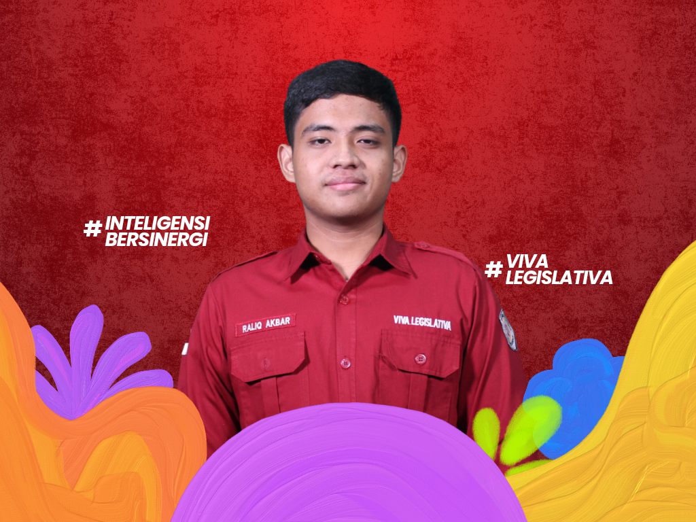
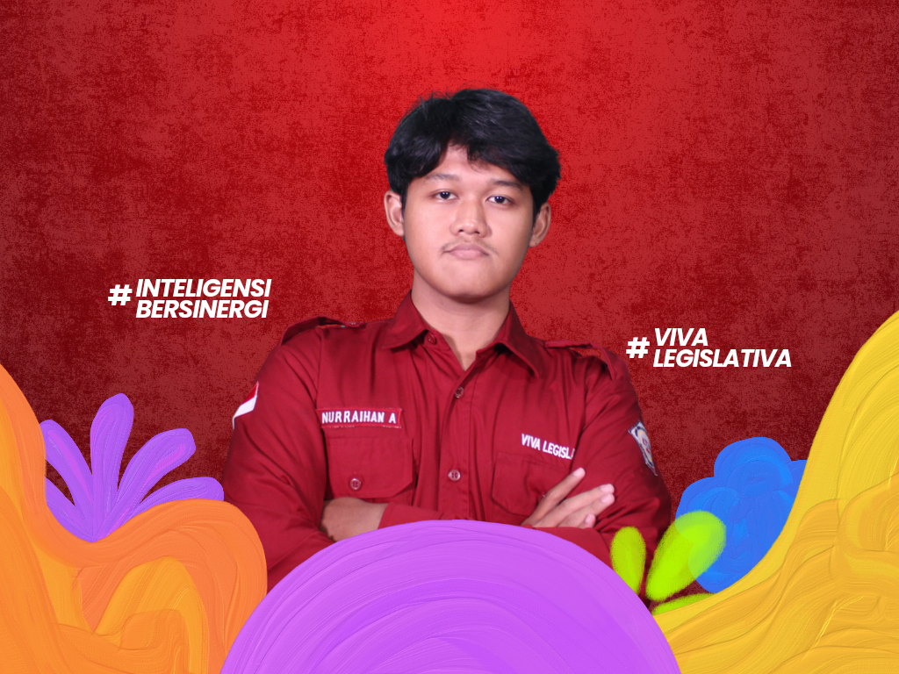
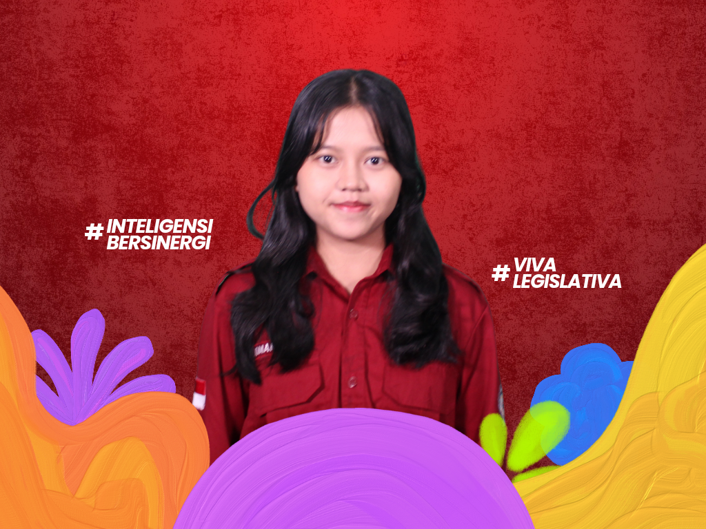
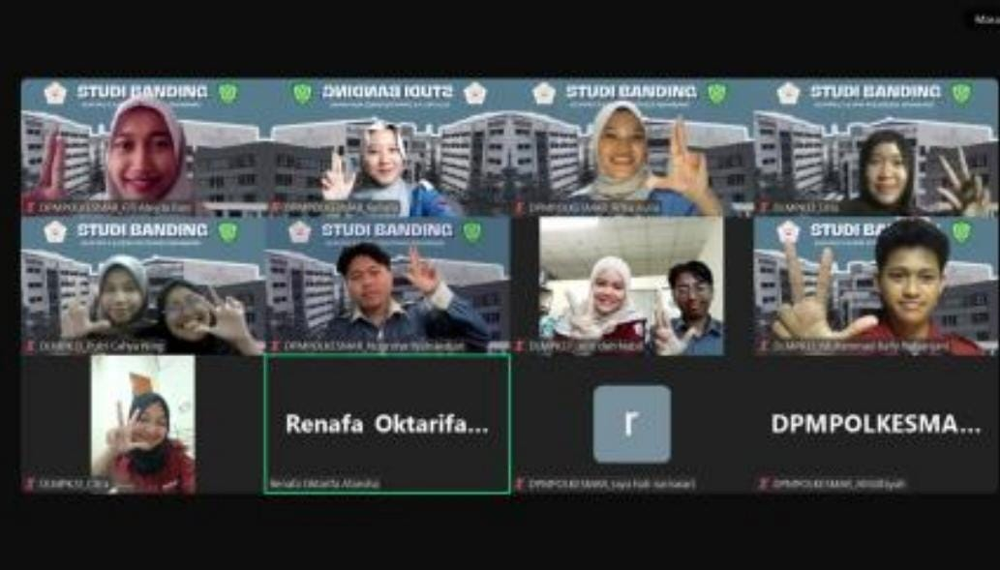
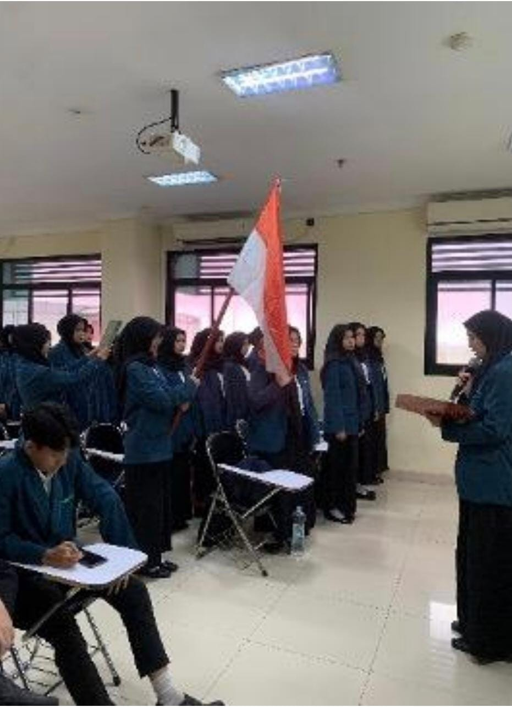
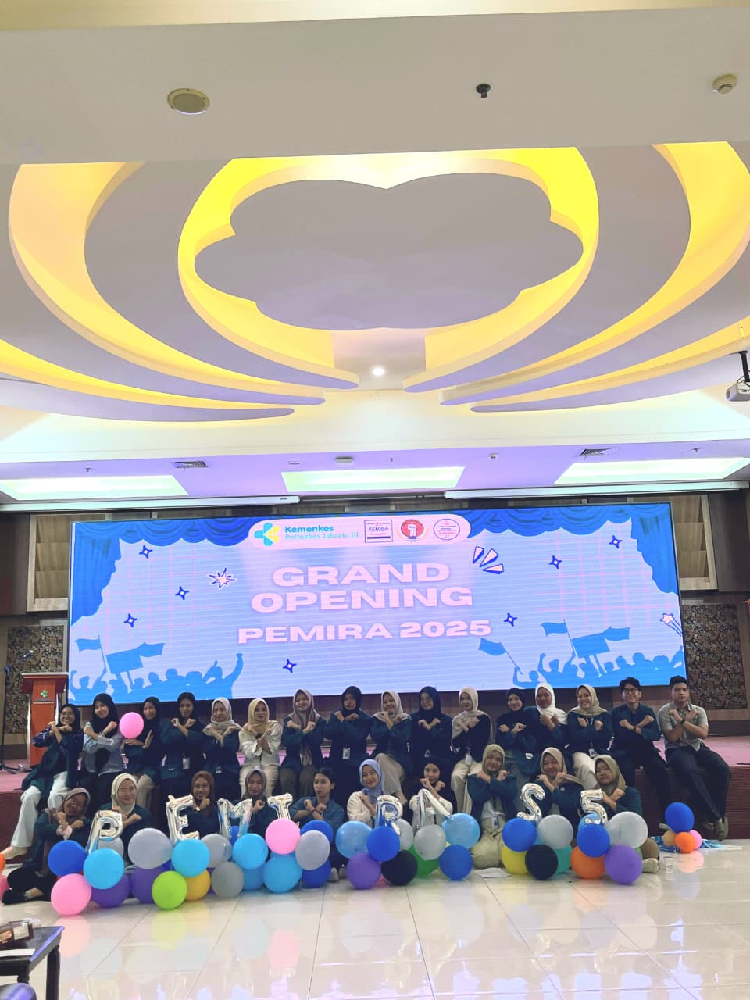

Komisi V Penelitian dan Pengembangan
Halo Mahasiswa Poltekkes Kemenkes Jakarta III!
Perkenalkan kami dari Komisi V Dewan Legislatif Mahasiswa Poltekkes Kemenkes Jakarta III Periode 2026. Yuk kenal kami lebih lanjut!

Citra Hayen Oktarina
Koordinator Komisi V

Raliq Akbar Dapalini
Anggota Komisi V

Eka Putri Oktaviani
Anggota Komisi V

Saffa Auriellina S.F.
Anggota Komisi V

Nuraihan Khairul Anam
Anggota Komisi V

Komang Ayu Aditya Sari
Anggota Komisi V
Tugas Pokok Komisi V
-
Melaksanakan penelitian dan pengembangan dalam keorganisasian mahasiswa.
-
Bertanggung jawab dalam kegiatan eksternal DLM Poltekkes Kemenkes Jakarta IIi.
-
Merumuskan, merencanakan, dan melaksanakan rancangan ketetapan tentang Pemilihan Umum Raya (PEMIRA) LKM Poltekkes Kemenkes Jakarta III.
Program Kerja Komisi V
-
Studi Banding
Menjalankan forum strategis dalam membangun jaringan komunikasi efektif serta sebagai sarana pertukaran wawasan antarlembaga legislatif dari kampus lain, sehingga kegiatan ini dapat menjadi suatu instrumen dalam meningkatkan kualitas dan fungsi organisasi Poltekkes Kemenkes Jakarta III yang adaptif dan profesional.

-
Sidang Istimewa
Dilaksanakan apabila terdapat suatu hal yang bersifat mendesak untuk segera dilakukan pembahasan ataupun hal lain bersifat tentatif.

-
Pemilihan Umum Raya (PEMIRA)
Merupakan suatu program kerja dari komisi lima DLM PKJ 3 yang dibantu oleh perangkat pemira lain. kegiatan ini merupakan wujud pelaksanaan demokrasi yang tepat bagi mahasiswa untuk mewujudkan regenerasi kepemimpinan di lkm poltekkes kemenkes jakarta 3, dengan memilih ketua umum DLM dan presiden serta wakil presiden mahasiswa Poltekkes Kemenkes jakarta III
